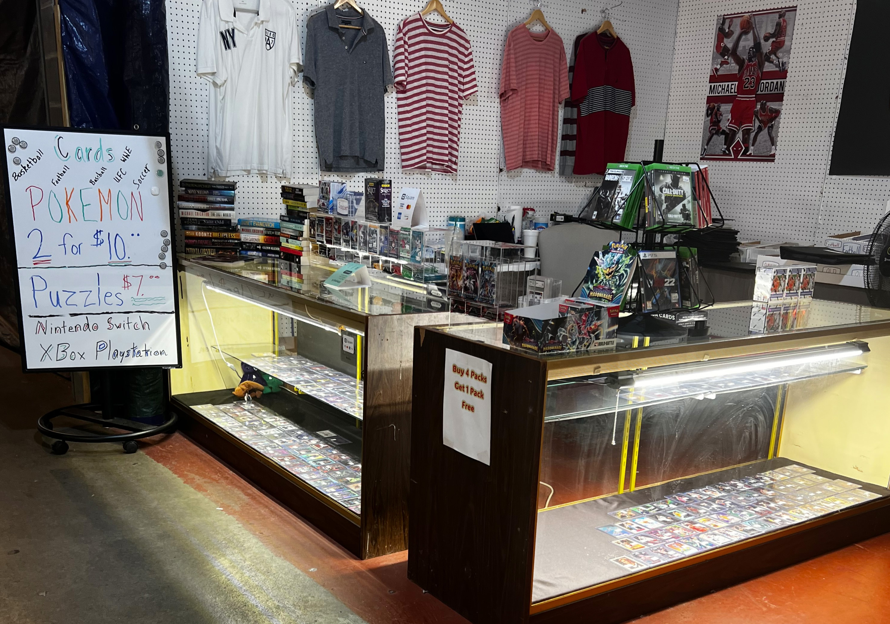
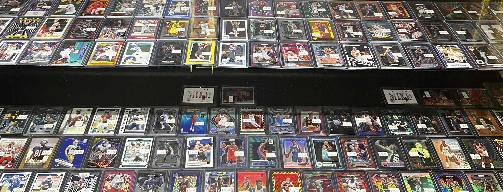
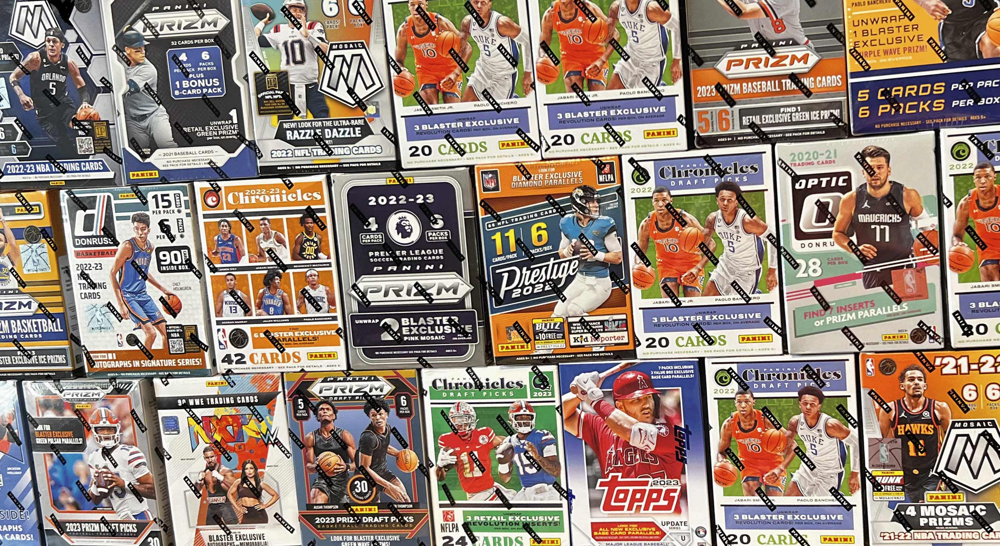

About Dusty's Page



Dusty's Card Shop has been open for around 3 years now. It is located in the Shelby Flea Market in Simpsonville, Kentucky. We are open from 11AM to 4PM every Saturday and Sunday. We are constantly growing and I hope you have been with us since day one. In the future I do see us opening a location in Shelbyville. Perhaps downtown Shelbyville on Main Street. I am not sure when this will happen but I do see it happening at some point.
Dusty's Card Shop is a hobby and collectibles store. Sport cards and Pokemon cards are our biggest items. We have basketball, football, baseball, soccer and Pokemon. Also UFC, WWE, and Marvel cards are also available. And we should not forget puzzles, books, clothing, and video games. This website is constantly evolving so check back frequently to see what's new. It started out with all of our inventory available for purchase, but that has changed due to the amount of items we have available and the rate at which we sell them. Now, the site is for our customers to aquire information about sales, operating days and hours, new items added, and to showcase our most popular items. It is not feasable to sell our products online because we like to negotiate our prices with the customer. We want everyone to get a great deal which is special to each sell so we encourage everyone to come by the shop and make an offer.
- Hours of Operation
- Monday - Closed
- Tuesday - Closed
- Wednesday - Closed
- Thursday - Closed
- Friday - Closed
- Saturday - 11AM to 4PM
- Sunday - 11AM to 4PM